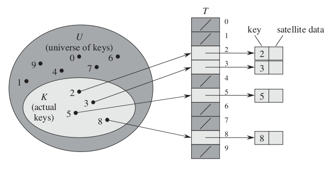
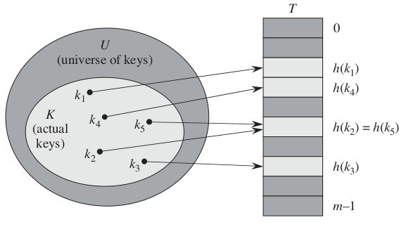
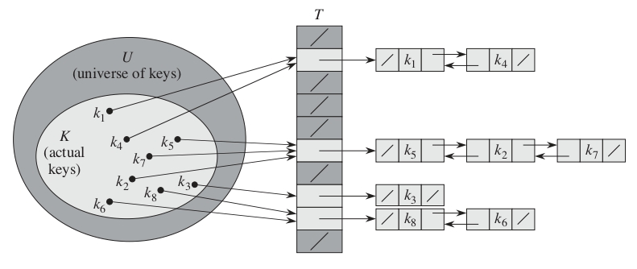

Tablas Hash#
¿Cuál es una forma eficiente de implementar diccionarios?
Utilizando tablas hash.
¿Por qué?
Aunque en el peor caso la búsqueda en una tabla hash puede tardar Θ(n), en la práctica el rendimiento es muy bueno.
Bajo suposiciones razonables, el tiempo promedio de búsqueda en una tabla hash es O(1).
¿Que es una Tablas Hash?
Una tabla hash es una estructura de datos que asocia claves (keys) con valores (values) mediante una función de hash. Su objetivo es permitir búsquedas, inserciones y eliminaciones rápidas en tiempo promedio O(1).
Características Principales
Almacenamiento basado en clave-valor.
Uso de una función hash para calcular la posición de almacenamiento.
Eficiencia alta en búsquedas, inserciones y eliminaciones (O(1) en promedio).
Puede manejar colisiones mediante técnicas como encadenamiento o direccionamiento abierto.
Cómo Funciona una Tabla Hash
Función Hash: Convierte una clave (key) en un índice de la tabla.
Inserción: El valor se almacena en la posición dada por la función hash.
Búsqueda: Se usa la clave para calcular la posición y acceder rápidamente al valor.
Colisiones: Cuando dos claves generan el mismo índice, se maneja con estrategias como listas enlazadas.
Manejo de Colisiones
Cuando dos claves producen el mismo índice en la tabla hash, se usa una estrategia para resolverlo:
Encadenamiento (Chaining): Se usa una lista enlazada en cada celda para almacenar múltiples valores.
Direccionamiento Abierto (Open Addressing): Se buscan otras posiciones libres dentro de la tabla.
Nota: En Java, HashMap usa encadenamiento para manejar colisiones.
¿Cuándo Usar una Tabla Hash?
Cuando necesitas búsquedas rápidas por clave.
Cuando no importa el orden de los elementos.
Cuando el número de elementos es grande y necesitas eficiencia.
¿Qué hace una tabla hash?
Generaliza la noción de un array ordinario.
Acceder directamente a una posición en un array se hace en \(O(1)\).
Cuando se pueden asignar posiciones a todas las claves posibles, los arrays son eficientes.
Si el número de claves almacenadas es pequeño en comparación con el número total de claves posibles, las tablas hash son una alternativa efectiva.
Direccionamiento Directo#
¿Qué es el direccionamiento directo?
Es una técnica sencilla que funciona bien cuando el universo \(U\) de claves es relativamente pequeño.
Supongamos que una aplicación necesita un conjunto dinámico en el que cada elemento tiene una clave tomada del universo \(U = {0,1,...,m-1}\), donde \(m\) no es muy grande y no hay dos elementos con la misma clave.
Para representar el conjunto dinámico, se usa un array o tabla de direccionamiento directo, denotado como \(T[0..m-1]\).
Cada posición o slot en el array corresponde a una clave en el universo \(U\).
El slot \(k\) apunta a un elemento del conjunto con clave \(k\).
Si el conjunto no contiene un elemento con clave \(k\), entonces \(T[k] = NIL\).
¿Cómo sería la implementación de operaciones en un diccionario usando direccionamiento directo?
// Búsqueda en direccionamiento directo
T[k]
// Inserción en direccionamiento directo
T[x.key] = x
// Eliminación en direccionamiento directo
T[x.key] = NIL
Cada una de estas operaciones tiene un tiempo de ejecución de \(O(1)\).
Ejemplo
Dado el universo \(U={0,1,...,9}\) y el conjunto de claves \(K={2,3,5,8}\):

¿Cuál es la desventaja del direccionamiento directo?
Si el universo \(U\) es muy grande, almacenar una tabla \(T\) de tamaño \(|U|\) puede ser impráctico o incluso imposible debido a las limitaciones de memoria de un ordenador típico.
Si \(|K|<<|U|\) la mayor parte del espacio reservado para \(T\) sería desperdiciado.
¿Qué hacer si \(|K|<<|U|\)?
Usar una tabla hash, ya que requiere mucho menos almacenamiento que una tabla de direccionamiento directo.
Se puede reducir el requisito de almacenamiento a \(Θ(|K|)\).
Se mantiene la ventaja de que la búsqueda de un elemento en la tabla hash sigue requiriendo solo \(O(1)\) en el caso promedio. Sin embargo, en el peor caso puede tomar más tiempo.
¿Qué es el hashing?
Mientras que en el direccionamiento directo un elemento con clave \(k\) se almacena en la posición \(k\), con hashing se almacena en la posición \(h(k)\). Se utiliza una función hash \(h\) para calcular la posición a partir de la clave \(k\).
La función \(h\) mapea el universo \(U\) de claves en los slots de una tabla hash \(T[0..m−1]\).
Representación matemática
Donde \(m<<|U|\) y cada elemento tiene una clave distinta \(h(k)\) es el valor hash de la clave \(k\).
La función hash reduce el rango de índices del array y, por lo tanto, el tamaño del array.
En lugar de tener un tamaño de \(|U|\), la tabla puede tener un tamaño de \(m\).

¿Cuál es el problema con esta solución?
Dos claves pueden generar el mismo valor hash, es decir, pueden ser asignadas al mismo espacio en la tabla.
A esta situación se le llama colisión.
¿Cómo resolver el problema de las colisiones?
La solución ideal sería evitarlas por completo:
Elegir una función de hash \(h\) adecuada.
Hacer que \(h\) parezca aleatoria para minimizar las colisiones.
Sin embargo, dado que \(|U| > m\), al menos dos claves deben compartir el mismo valor hash, por lo que es imposible evitarlas por completo.
¿Cuál es otra manera de resolver este problema?
Mediante técnicas de resolución de colisiones, como encadenamiento.
¿Qué es el encadenamiento?
Es un mecanismo donde todos los elementos que generan el mismo hash se agrupan en una lista enlazada.
El espacio \(j\) de la tabla contiene un puntero a la cabeza de la lista de elementos que tienen el mismo hash.
Si no hay elementos en ese espacio, contiene NIL.

Implementación de operaciones en diccionario usando hash y encadenamiento
// Inserción en hash con encadenamiento
CHAINED-HASH-INSERT(T, x)
insertar x al inicio de la lista T[h(x.key)]
// Búsqueda en hash con encadenamiento
CHAINED-HASH-SEARCH(T, k)
buscar un elemento con clave k en la lista T[h(k)]
// Eliminación en hash con encadenamiento
CHAINED-HASH-DELETE(T, x)
eliminar x de la lista T[h(x.key)]
¿Cuáles son los tiempos de ejecución de estas operaciones?
Inserción: \(O(1)\) en el peor caso.
Búsqueda: depende de la longitud de la lista, en el peor caso puede ser \(O(n)\).
Eliminación: \(O(1)\) si las listas están doblemente enlazadas.
Nota: En la eliminación, la función CHAINED-HASH-DELETE recibe el elemento \(x\) en lugar de su clave \(k\), para evitar una búsqueda adicional.
¿Cuánto tiempo toma buscar un elemento en una tabla hash con encadenamiento?
Sea una tabla hash \(T\) con \(m\) espacios y \(n\) elementos. Se define el factor de carga \(α\) como: \(\alpha\) de \(T\) como \(\frac{n}{m}\)
\(\alpha\) representa el número promedio de elementos en cada lista.
En el peor caso, todas las claves colisionan en el mismo espacio, generando una lista de longitud \(n\). En este caso, el tiempo de búsqueda sería \(Θ(n)\), más el tiempo para calcular la función hash.
Conclusión: No usamos tablas hash por su rendimiento en el peor caso, sino por su rendimiento en promedio.
Rendimiento promedio
El rendimiento promedio del hashing con encadenamiento depende de qué tan bien la función hash \(h\) distribuya uniformemente los elementos.
Se asume hashing uniforme simple, donde cada elemento es igualmente probable de ser asignado a cualquier espacio en la tabla.
Casos de búsqueda:
Búsqueda sin éxito: no hay un elemento con clave \(k\).
Búsqueda exitosa: encontramos un elemento con clave \(k\).
Teoremas:
Búsqueda sin éxito: en promedio, toma tiempo \(Θ(1+\alpha)\).
Búsqueda exitosa: en promedio, toma tiempo \(Θ(1+\alpha)\).
Nota: ambos resultados bajo el supuesto de estar haciendo hashing uniforme.
¿Qué significa este análisis?
Si el número de espacios en la tabla es proporcional al número de elementos, es decir, \(n=O(m)\)
La búsqueda toma tiempo constante en promedio.
Todas las operaciones del diccionario pueden realizarse en \(O(1)\) en promedio.
Funciones Hash#
¿Qué hace que una función hash sea buena?
Que satisfaga (aproximadamente) la suposición de hashing uniforme simple.
Es decir, que cada clave tenga la misma probabilidad de dispersarse en cualquiera de los \(m\) espacios, independientemente de dónde hayan sido asignadas otras claves.
Desafortunadamente, típicamente no tenemos forma de verificar esta condición.
Rara vez conocemos la distribución de probabilidad de la que provienen las claves.
Ejemplo: Identificadores similares
Es bastante común en un programa tener nombres de identificadores similares, como
var1,var2, etc.Una buena función hash debe asignarlos a diferentes espacios.
De esta manera, se puede observar la independencia entre cada par de claves.
Ejemplo: Distribución conocida de claves
Ocasionalmente, conocemos la distribución de las claves.
Si sabemos que las claves son números reales aleatorios \(k\), distribuidos de manera uniforme e independiente en el rango \(0 \leq k \leq 1\), entonces la función hash:
satisface la condición de hashing uniforme simple.
¿Qué hacer si las claves son cadenas de texto?
La mayoría de las funciones hash asumen que el universo de claves es el conjunto \(\mathbb{N} = \{0,1,...\}\).
Si las claves no son números naturales, debemos encontrar una forma de interpretarlas como tales.
Para interpretar una cadena de texto, podemos usar la tabla ASCII, que asigna valores entre 0 y 127 a los caracteres.
Podemos interpretar el identificador \(pt\) como el par de enteros decimales \((112, 116)\), ya que en ASCII:
\(p = 112\)
\(t = 116\)
Finalmente, lo expresamos como un número en base 128:
Métodos para crear funciones hash#
Método de división
\(h(k) = k \mod m\)
En este caso, \(m\) no debe ser una potencia de \(2\).
Si \(m = 2^p\), entonces \(h(k)\) son simplemente los \(p\) bits menos significativos de \(k\).
Una buena elección para \(m\) suele ser un número primo que no esté demasiado cerca de una potencia de \(2\).
**Ejemplo: **
Método de división con \(m = 2^3 = 8\). Aquí, \(h(k)\) corresponde a los 3 bits menos significativos de \(k\):
\(k = 8 \quad \longrightarrow \quad 8 \mod 8 = 0 \quad \longrightarrow \quad 1\underline{000}\)
\(k = 16 \quad \longrightarrow \quad 16 \mod 8 = 0 \quad \longrightarrow \quad 10\underline{000}\)
\(k = 24 \quad \longrightarrow \quad 24 \mod 8 = 0 \quad \longrightarrow \quad 11\underline{000}\)
\(k = 4 \quad \longrightarrow \quad 4 \mod 8 = 4 \quad \longrightarrow \quad \underline{100}\)
\(k = 12 \quad \longrightarrow \quad 12 \mod 8 = 4 \quad \longrightarrow \quad 1\underline{100}\)
\(k = 20 \quad \longrightarrow \quad 20 \mod 8 = 4 \quad \longrightarrow \quad 10\underline{100}\)
\(k = 28 \quad \longrightarrow \quad 28 \mod 8 = 4 \quad \longrightarrow \quad 11\underline{100}\)
Método de multiplicación
\(h(k) = \lfloor m \times (k \cdot A \mod 1) \rfloor\)
Donde \(k \cdot A \mod 1\) es la parte fraccionaria de \(k \cdot A\), es decir, \((k \cdot A - \lfloor k \cdot A \rfloor)\).
Se debe cumplir que \(0 < A < 1\).
Consideraciones sobre el método de multiplicación
El valor de \(m\) no es crítico.
No es necesario evitar ciertos valores de \(m\) como en el método de división.
Comúnmente, \(m\) se elige como una potencia de \(2\) ( \(m = 2^p\) para algún entero \(p\)).
Esto simplifica los cálculos.
Elección óptima del valor de \(A\)
Aunque este método funciona con cualquier valor de la constante \(A\), algunos valores ofrecen mejores resultados.
La elección óptima depende de las características de los datos a dispersar. Knuth sugiere usar
Hashing universal
En el hashing universal, al inicio de la ejecución se selecciona aleatoriamente una función hash de una clase cuidadosamente diseñada.
Sea \(\mathcal{H} = \{h_1, h_2, ..., h_l\}\) una colección finita de funciones hash que asignan un universo \(U\) de claves al rango \(\{0,1,...,m-1\}\).
Dicha colección se considera universal si, para cada par de claves distintas \(x, y \in U\), la cantidad de funciones hash \(h \in \mathcal{H}\) que cumplen \(h(x) = h(y)\) es como máximo \(|\mathcal{H}| / m\).
En otras palabras, al elegir una función hash al azar de \(\mathcal{H}\), la probabilidad de colisión entre dos claves distintas \(x, y\) no es mayor que \(1/m\), lo que equivale a una asignación aleatoria e independiente en el rango \(\{0,1,...,m-1\}\).